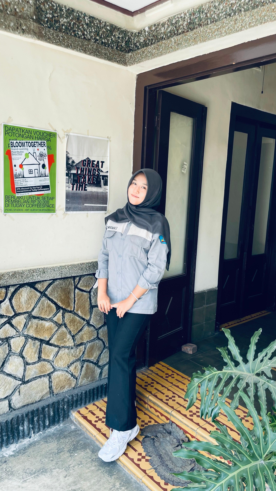
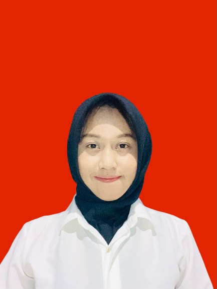
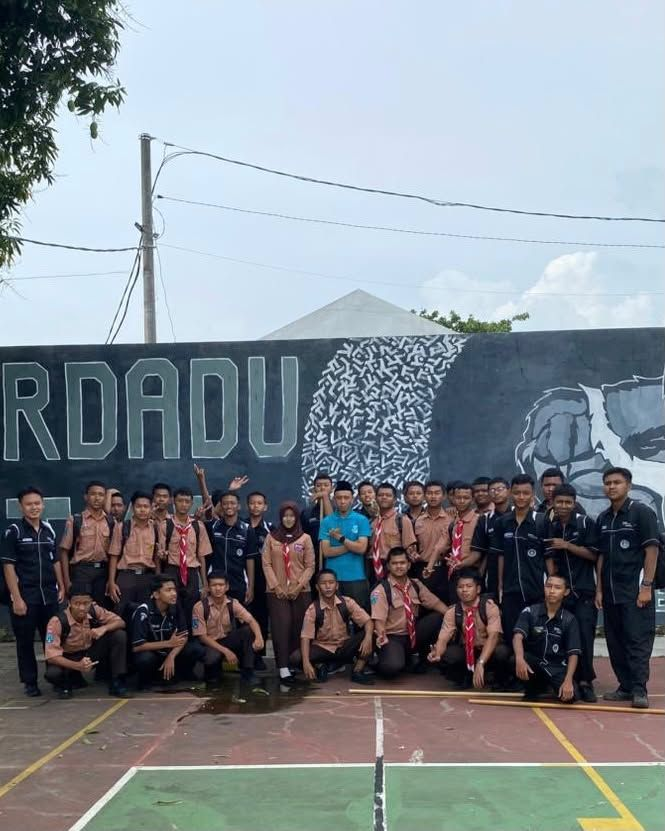
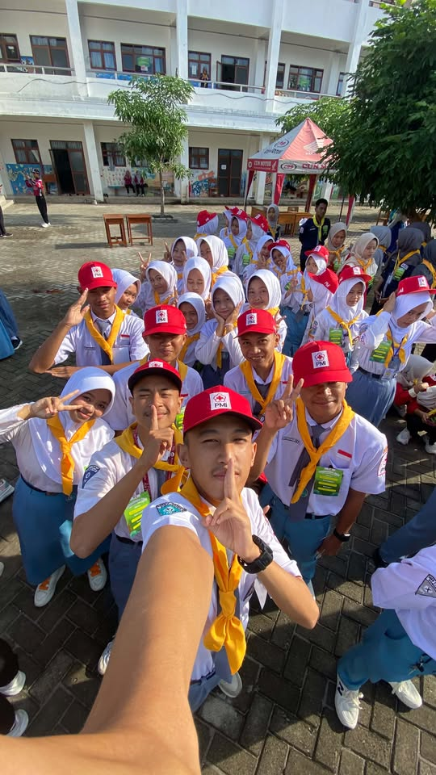
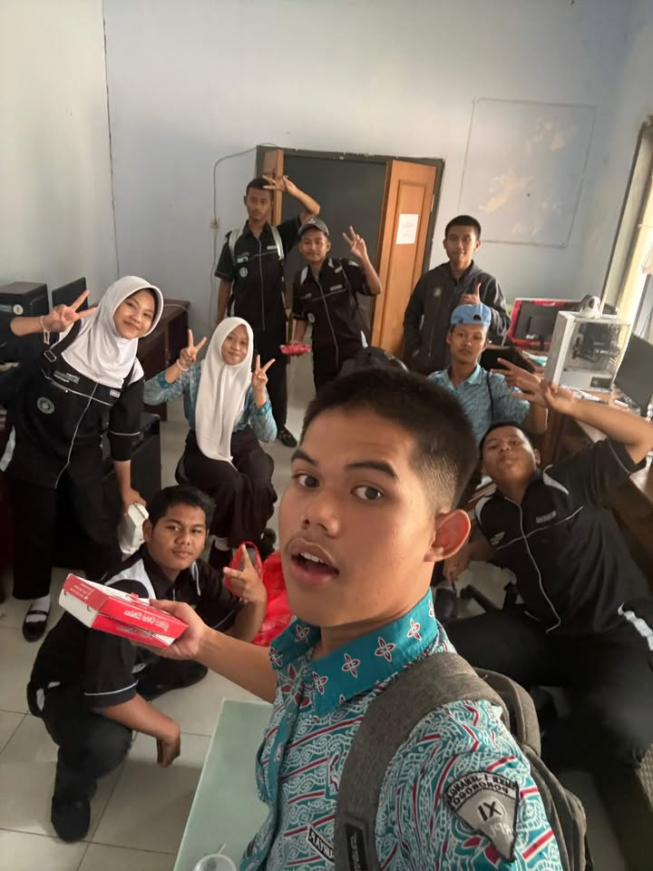
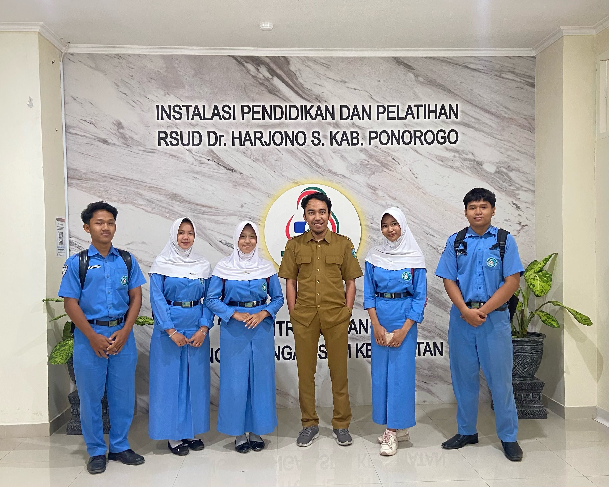
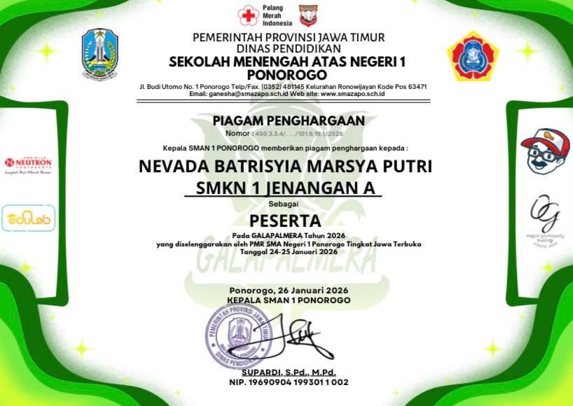
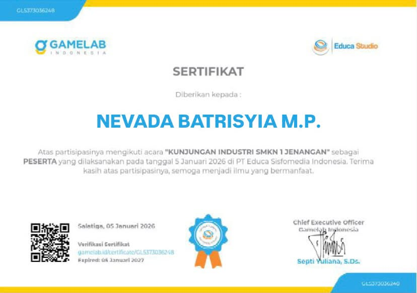
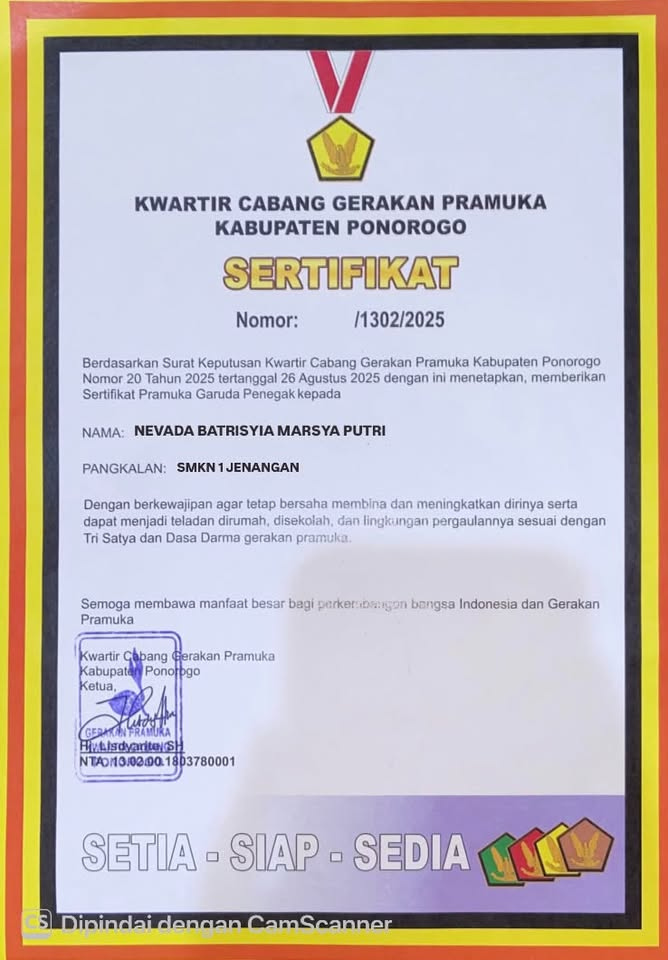
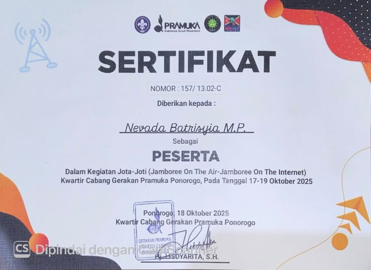

HALO, SELAMAT DATANG
Calon Web Developer yang terus belajar dan berkembang
Saya adalah siswi SMKN 1 Jenangan Ponorogo jurusan Rekayasa Perangkat Lunak yang memiliki minat besar dalam pengembangan web.

TENTANG SAYA
Saya Nevada Batrisyia Marsya Putri, siswi kelas XII RPL C di SMKN 1 Jenangan Ponorogo. Saya memiliki ketertarikan mendalam pada dunia pengembangan web, khususnya di bidang frontend dan backend.
Sejak masuk SMK, saya terus mempelajari berbagai teknologi web — mulai dari HTML, CSS, dan JavaScript, hingga PHP, MySQL, dan React. Saya percaya bahwa kemampuan coding dibangun melalui latihan konsisten dan keberanian untuk mencoba hal baru.
Selain akademik, saya aktif berorganisasi di Pramuka, PMR, dan Multimedia. Pengalaman ini membentuk saya menjadi pribadi yang disiplin, mampu bekerja dalam tim, dan siap menghadapi tantangan di dunia kerja.
"Belajar hari ini, berkarya esok hari."
PROFIL PROFESIONAL
Peran profesional dan bidang keahlian yang saya geluti saat ini.

Junior Web Developer
Jurusan Rekayasa Perangkat Lunak (RPL), Kelas XII RPL C. Aktif mengikuti pembelajaran pemrograman dan pengembangan aplikasi web.
Mengembangkan aplikasi berbasis web dengan fokus pada frontend (React, JavaScript) dan backend (PHP, MySQL, PostgreSQL).
Aktif berorganisasi di Pramuka (Wakil Ketua), PMR (Peer Educator), dan Multimedia (Bendahara I) dengan berbagai peran dan tanggung jawab.
Berdomisili di Ponorogo dan terbuka untuk kesempatan magang, freelance, atau kolaborasi project di seluruh Indonesia.
PENDIDIKAN
Jurusan Rekayasa Perangkat Lunak (RPL)
Kelas XII RPL CMadrasah Tsanawiyah Negeri
Sekolah Dasar Negeri
KEMAMPUAN
Struktur & konten web
Tampilan & layout
Interaksi & dinamis
Backend & server-side
MySQL & PostgreSQL
Library frontend
PORTOFOLIO
Toko pakaian online dengan sistem katalog, keranjang, dan checkout. Dibangun dengan PHP, MySQL, dan React.
E-CommerceSistem Informasi Catat Kepegawaian — aplikasi untuk mengelola data dan arsip pegawai rumah sakit. Dibangun dengan React & JavaScript.
Sistem InformasiWebsite toko online untuk produk kerajinan gerabah.
E-CommerceWebsite pribadi untuk menampilkan profil dan hasil karya.
PortofolioKEGIATAN & ORGANISASI
Klik setiap card untuk melihat cerita lengkap dan dokumentasi fotonya.

Wakil Ketua · 2025-2026
Ketua pelaksana Diklat Pasus, MC Bukber Angkatan, peserta PASGA (Pramuka Garuda) 2025.
Baca Selengkapnya →
Peer Educator
Peserta Lomba GALAPALMERA bidang Kesehatan Remaja se-Jawa Terbuka. Aktif sebagai peer educator.
Baca Selengkapnya →
Bendahara I
Event photography dan dokumentasi sekolah: MPLS, Drama Kolaborasi, Hari Nasional, dan lainnya.
Baca Selengkapnya →
Praktik Kerja Lapangan
PKL di RSUD bagian Teknologi Informasi, mengelola arsip pegawai. Belajar dunia kerja sesungguhnya.
Baca Selengkapnya →PRESTASI & PENCAPAIAN
Dipercaya memimpin dan berkontribusi di berbagai organisasi sekolah dengan berbagai jabatan strategis.
Mengembangkan kemampuan teknis di bidang Rekayasa Perangkat Lunak melalui project nyata dan pengalaman industri.
SERTIFIKAT & PENGHARGAAN
Dokumentasi resmi dari kegiatan dan kompetisi yang saya ikuti.


Kunjungan industri jurusan RPL ke Salatiga, 6 Januari 2026.
Lihat
Sertifikat Pramuka Garuda — tingkatan tertinggi dalam Pramuka.
Lihat
Jamboree on the Air & Jamboree on the Internet — kegiatan Pramuka tingkat internasional.
LihatWEBSITE USAHA
Menyediakan produk fashion berkualitas seperti kemeja, kaos, celana, dan pakaian lainnya. Dibuat dengan teliti dan bahan pilihan.
Kunjungi TokoKONTAK
Saya terbuka untuk diskusi, kolaborasi, atau sekadar bertukar pikiran. Jangan ragu menghubungi saya melalui salah satu kanal berikut.